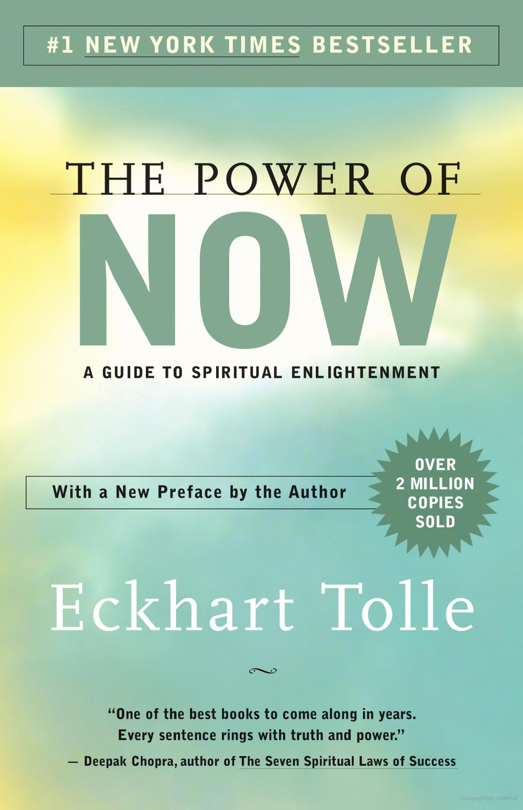
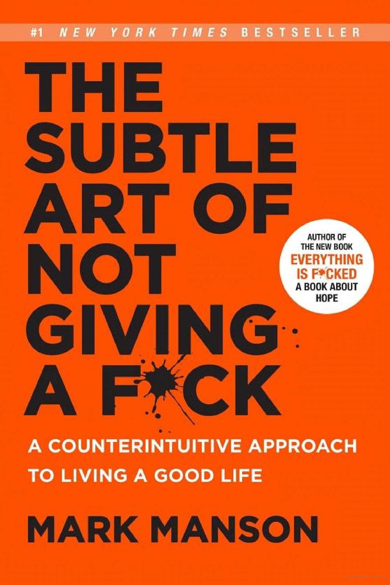

Think and Grow Rich
Napoleon Hill

Unlock the secrets to success and abundance by delving into the timeless wisdom of "Think and Grow Rich." Napoleon Hill's masterpiece offers powerful insights into the mindset and strategies employed by the world's most successful individuals. From overcoming obstacles to mastering the art of positive thinking, this book serves as a roadmap to achieve your goals and unlock your full potential. Discover the principles that can transform your life and propel you towards lasting success.
The 7 Habits of Highly Effective People
Stephen R. Covey

Elevate your personal and professional life with the timeless wisdom of "The 7 Habits of Highly Effective People." Stephen R. Covey presents a holistic approach to success, guiding readers to develop essential habits that promote effectiveness, leadership, and personal growth. From prioritizing goals to fostering meaningful relationships, this book empowers you to take charge of your life and create a lasting impact in both your personal and professional spheres.
Man's Search for Meaning
Viktor E. Frankl

Delve into the profound exploration of human existence and find purpose amidst life's challenges in "Man's Search for Meaning." Viktor E. Frankl, a Holocaust survivor and renowned psychiatrist, shares his transformative journey and insights into the search for meaning and fulfillment. This poignant memoir reminds us of the power of resilience and the ability to find meaning even in the most difficult circumstances, offering profound lessons that will resonate long after you turn the last page.
How to Win Friends and Influence People
Dale Carnegie

Master the art of building meaningful connections and influencing others with "How to Win Friends and Influence People." Dale Carnegie's timeless classic provides practical strategies for effective communication, enhancing interpersonal skills, and navigating social interactions with finesse. Whether in personal relationships or professional endeavors, this book equips you with the tools to cultivate genuine connections and become a respected and influential individual.
The Power of Now
Eckhart Tolle
Embark on a transformative journey of self-discovery and inner peace with "The Power of Now." Eckhart Tolle invites readers to embrace the present moment, transcending past regrets and future anxieties. Through profound insights and practical teachings, this book illuminates the path to inner stillness, spiritual awakening, and living a life of profound fulfillment.
The Alchemist
Paulo Coelho

Uncover the transformative power of following your dreams and embracing life's journey in "The Alchemist." Paulo Coelho weaves a captivating tale of self-discovery, destiny, and the pursuit of one's true purpose. This enchanting novel inspires readers to listen to their hearts, overcome obstacles, and find fulfillment in the pursuit of their dreams, reminding us that the greatest treasures lie within us all.
The Four Agreements
Don Miguel Ruiz
Experience personal freedom and authentic happiness by adopting the powerful principles of "The Four Agreements." Don Miguel Ruiz shares ancient Toltec wisdom, offering a code of conduct for living a life of integrity, love, and fulfillment. Through these four profound agreements, you can transform your relationships, free yourself from self-limiting beliefs, and create a world of harmony and happiness.
Awaken the Giant Within
Tony Robbins

Unleash your inner potential and take control of your destiny with "Awaken the Giant Within." Tony Robbins, a renowned life coach, provides practical strategies for personal and professional mastery. This empowering book equips you with the tools to overcome fears, set compelling goals, and create a life of fulfillment, pushing you towards extraordinary levels of success and fulfillment.
The Subtle Art of Not Giving a F*ck
Mark Manson
Challenge conventional wisdom and embrace a refreshing approach to personal growth with "The Subtle Art of Not Giving a Fck." Mark Manson delivers a bold and unfiltered guide to living a meaningful life by focusing on what truly matters. With blunt humor and refreshing candor, this book invites you to redefine your values, let go of external expectations, and embrace a life of authenticity and resilience.
Atomic Habits
James Clear

Transform your habits and create lasting change with the groundbreaking insights of "Atomic Habits." James Clear offers a practical framework for building and breaking habits, enabling you to make incremental improvements that lead to remarkable results. Through the power of small, consistent actions, this book empowers you to design a life of continuous growth and extraordinary achievements.